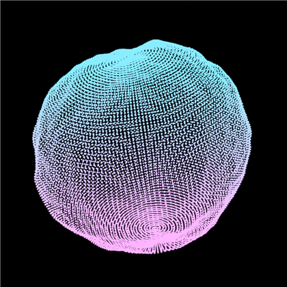

Point Cloud Blob
Browser preview for the procedural Blender scene. The animation below is driven by rendered PNG frames exported from Geometry Nodes + bpy.

Browser preview for the procedural Blender scene. The animation below is driven by rendered PNG frames exported from Geometry Nodes + bpy.
